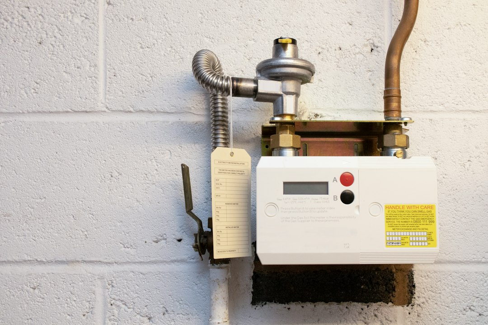

For planning, the published guide cites three broad 2026 installed ranges: $600 to $3,100 for a standard tank replacement, $1,400 to $5,600 for tankless work, and $3,200 to $4,700 for professional heat pump fitting. Treat them as scoping bands, not quotes. The useful next step is to separate heater type, fuel, location, access, permit handling, disposal, and any gas, venting or electrical work before calling an installer.
For homeowners comparing water heater installation options, the practical question is whether the job is a straightforward replacement, a conversion, a repair boundary call, or a permit-sensitive project.
Water Heater Installation Explained
Plumber for Water Heater Installation frames the decision around scope before price: tank swap, tankless conversion, heat pump fit, emergency replacement, or a repair question. A product choice alone does not tell a plumber whether fuel, location, access, venting, electrical supply or permit assumptions still fit the job.
A like-for-like tank replacement belongs in a different comparison from a tankless change. A heat pump recommendation also needs a fit check rather than a simple size comparison. Before asking for a number, write down the current unit, where it sits, and what symptom started the call.
- Record whether the existing unit is gas, electric, tankless or heat pump.
- Note the install location, such as garage, basement, closet or utility room, if known.
- State whether the issue is leaking, urgent failure, planned replacement or uncertainty between repair and replacement.
What Changes The Quote
The published ranges are useful only when the quote matches the same job category. Standard tank replacement, tankless conversion and heat pump fitting can carry different assumptions. The guide uses national cost bands as a planning reference, then pushes the reader back to local authority checks and site-specific installer questions.
Scope language helps avoid a vague call. Ask whether the work is being priced as like-for-like replacement, repair or conversion. Request separate assumptions for the heater, labour, disposal, permit handling and any venting, gas, electrical or access work.
The companion installation guide can help when the decision still needs a plain-language walk-through before a quote brief is sent.
Permit And Local Checks
Permit answers are local. The source material gives Oregon as an example where replacement can be permit-required plumbing work, while also saying the city or county answer is the one that matters for a specific job. Use that as a prompt to ask the right local question before install day.
Ask who verifies the permit requirement, who files or schedules anything required, and whether inspection is included in the quoted scope. If no permit is expected, ask which local rule or authority supports that assumption.
Trade boundaries can also affect the quote. A heater swap may be mostly plumbing. A conversion can involve gas, venting or electrical work. Ask which licensed trade handles each part, and whether the installer prices those tasks directly or expects you to arrange them separately.
Who This Applies To
This guide is for homeowners who need a heater decision but do not yet have a clean quote scope. It suits a failed tank, a possible tankless conversion, a heat pump fit check, or symptoms that may point to repair rather than replacement.
It is less useful for a model-by-model appliance ranking. Define the installation path first, then compare products inside the real constraints: fuel, space, access, permit handling and likely extra service work.
- Use the cost bands as a planning reference, not a promised local price.
- Use state, city or ZIP details to frame licence, permit, travel and local authority assumptions.
- Use symptom and access notes to help the installer decide what needs inspection before quoting.
Incentives And Current Proof
The guide makes a narrow point about incentives: do not assume a 2026 federal heat pump credit from an older source. It notes that the IRS page reviewed for the build documented the credit through December 31, 2025, so any 2026 claim needs fresh proof before it is used in a payback calculation.
That does not rule out a heat pump unit. It means the financial case should rest on confirmed current programs, the installed quote and the site fit. If a recommendation depends on a rebate, tax credit or other incentive, ask for the current source before treating the saving as part of the budget.
A Clear Quote Brief
A good brief is short, factual and easy for a tradesperson to test. Identify the existing heater type, the location, the symptom, whether you want repair or replacement advice, and whether a conversion is being considered. The source form asks for state and ZIP because those details help frame licence, permit, travel and local authority assumptions.
Before calling, write one paragraph and keep questions beside it. Ask what would change the price after inspection. Ask which parts of the work are included and which are excluded. A quote that shows its assumptions is easier to compare than a lower number with missing scope.
- Identify the existing unit. Write down whether the current heater is gas, electric, tankless or heat pump, plus its location and main symptom.
- Name the installation path. Decide whether you are asking about like-for-like replacement, tankless conversion, heat pump fit, emergency replacement or repair advice.
- Ask the permit question. Ask who checks local permit and inspection requirements, and whether that work is included in the quote.
- Separate quote items. Request separate assumptions for heater, labour, disposal, permit handling, access, venting, gas and electrical work.
| Path | Use the range for | Questions to ask |
|---|---|---|
| Standard tank replacement | Broad installed tank replacement planning | Is the fuel, location and broad type staying comparable? |
| Tankless conversion | Tankless planning range | Will venting, gas or electrical changes be included? |
| Heat pump unit | Professional heat pump install planning | Is the site fit confirmed and are any incentives current? |
Common questions
Are the listed cost ranges a quote? No. They are broad planning bands cited by the published guide: $600 to $3,100 for standard tank replacement, $1,400 to $5,600 for tankless work, and $3,200 to $4,700 for professional heat pump fitting.
When does a tank replacement become a conversion? The guide treats it as a different scope when the job changes heater type or building services. Tankless work may involve venting, gas or electrical changes, so it should not be compared with a simple tank swap.
Should permit handling be discussed before install day? Yes. The guide says permit answers are local and gives Oregon as an example where replacement can be permit-required plumbing work. Ask who checks the local rule and who handles inspection if one is needed.
Can a heat pump incentive be assumed in 2026? No. The guide notes that the IRS page reviewed for the build documented the federal credit through December 31, 2025, so any 2026 incentive claim needs fresh proof.
This guide covers quote scope, cost-band interpretation, permit questions and fit checks for residential heater replacement or conversion planning.